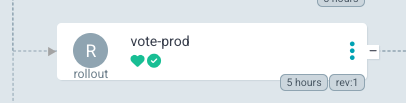
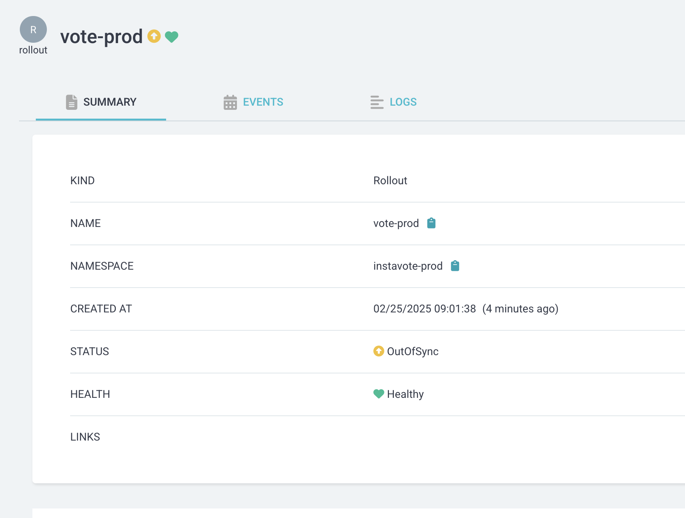

Analysis and Experiments
In this lab, we aim to explore advanced deployment strategies using ArgoCD and Prometheus. We will set up and configure ArgoCD to visualize rollouts, deploy a metrics server for monitoring, and integrate Prometheus and Grafana for sophisticated monitoring and analysis. Additionally, we will implement canary deployments with experiments and analysis to ensure the stability and performance of our applications before fully rolling them out to production. This comprehensive approach will help us achieve reliable and efficient continuous delivery in our Kubernetes environment.
Prepwork
Delete the previous appset and clean up the application deployments using,
kubectl delete appset instavote -n argocd
Reconfigure the appset to launch only vote app in prod. You could use this code as reference
wget -c https://gist.githubusercontent.com/initcron/a5928b1fc4fad138045d88135faf0e44/raw/0e4bc43e3ee4c79c5c7075a03f34c01441fa6376/instavote-appset-vote-prod.yaml
kubectl apply -f instavote-appset-vote-prod.yaml
validate
kubectl get appset,app -n argocd
Setup ArgoCD Extension for Rollout Visualization
To apply the ArgoCD server patch to install the Argo Rollouts extension, follow these steps:
Step 1: Save the Patch to a File
Create a new YAML file, e.g., argocd-rollouts-extension-patch.yaml, and add the following content:
apiVersion: apps/v1
kind: Deployment
metadata:
name: argocd-server
namespace: argocd
spec:
template:
spec:
initContainers:
- name: rollout-extension
image: quay.io/argoprojlabs/argocd-extension-installer:v0.0.5
env:
- name: EXTENSION_URL
value: 'https://github.com/argoproj-labs/rollout-extension/releases/download/v0.3.5/extension.tar'
volumeMounts:
- mountPath: /tmp/extensions/
name: extensions
securityContext:
allowPrivilegeEscalation: false
containers:
- name: argocd-server
volumeMounts:
- mountPath: /tmp/extensions/
name: extensions
volumes:
- name: extensions
emptyDir: {}
Step 2: Apply the Patch
You could add the rollout extenstion so that you could view the progress of canary/blue/green deployments right from ArgoCD UI.
Run the following command to apply the patch to the argocd-server deployment:
kubectl patch deployment argocd-server -n argocd --patch-file argocd-rollouts-extension-patch.yaml
Step 3: Restart the ArgoCD Server
After applying the patch, restart the ArgoCD server to ensure changes take effect:
kubectl rollout restart deployment argocd-server -n argocd
Step 4: Verify the Deployment
Check if the argocd-server deployment includes the new initContainers section:
kubectl get deployment argocd-server -n argocd -o yaml | grep -A 10 "initContainers:"
To validate, try accessing your ArgoCD UI, navigate to an application, and you should see the "Rollout" tab under the app details. 🚀
 
Setup Metrics Server
Its importantt to have metrics server to get the essential pod and node monitoring data.
If you try to pull monitoring information using the following commands
kubectl top pod
kubectl top node
it does not show it, rather gives you a error message similar to
[output]
Error from server (NotFound): the server could not find the requested resource (get services http:heapster:)
Even though the error mentions heapster, its replaced with metrics server by default now.
Deploy metric server with the following commands,
cd ~
git clone https://github.com/schoolofdevops/metrics-server.git
kubectl apply -k metrics-server/manifests/overlays/release
Validate
kubectl get deploy,pods -n kube-system --selector='k8s-app=metrics-server'
You could validate again with
kubectl top pod
kubectl top node
where expected output should be similar to,
kubectl top node
NAME CPU(cores) CPU% MEMORY(bytes) MEMORY%
kind-control-plane 123m 6% 688Mi 17%
kind-worker 39m 1% 498Mi 12%
kind-worker2 31m 1% 422Mi 10%
If you see a similar output, monitoring is now been setup.
Deploy Prometheus and Grafana
To further setup sophisticated monitoring, we will deploy Prometheus and Grafana.
Begin by setting up the helm repository
helm repo add prometheus-community https://prometheus-community.github.io/helm-charts
helm repo update
Install Prometheus and Grafana as
helm upgrade --install prom -n monitoring \
prometheus-community/kube-prometheus-stack \
--create-namespace \
--set grafana.service.type=NodePort \
--set grafana.service.nodePort=30500 \
--set prometheus.prometheusSpec.podMonitorSelectorNilUsesHelmValues=false \
--set prometheus.prometheusSpec.serviceMonitorSelectorNilUsesHelmValues=false
Login using
User : admin
Pass: prom-operator
Redeploy Nginx Ingress Controller
First, uninstall nginx ingress conroller as,
helm un ingress-nginx -n ingress-nginx
Re deploy nginx ingress controller with helm, this time enabling the exposing the metrics which can then be scraped/collected by prometheus. This will automatically integrate nginx with prometheus.
helm upgrade --install ingress-nginx ingress-nginx \
--repo https://kubernetes.github.io/ingress-nginx \
--namespace ingress-nginx --create-namespace \
--set controller.metrics.enabled=true \
--set controller.metrics.serviceMonitor.enabled=true --set \ controller.metrics.serviceMonitor.additionalLabels.release="prometheus" \
--set controller.hostPort.enabled=true \
--set controller.hostPort.ports.http=80 \
--set controller.hostPort.ports.https=443 \
--set controller.service.type=NodePort \
--set-string controller.nodeSelector."kubernetes\.io/os"=linux \
--set-string controller.nodeSelector.ingress-ready="true"
Setup Grafana Dashboard for Nginx Ingress Controller
Now, login to grafana and import custom dashboard for Nginx Ingress as
- Left menu (hover over +) -> Dashboard
- Click New -> Import"
- Enter the copy pasted json from https://raw.githubusercontent.com/kubernetes/ingress-nginx/main/deploy/grafana/dashboards/nginx.json
- Click
Import JSON / Load - Select the Prometheus data source
- Click "Import"
⠀
It may look similar to this, with possibly less data initially

However, if you see some metric coming in, your setup with Nginx Ingress and Promethus Integration is working ! You may pat your back at this time :)
Add Local DNS to access the Vote App via Browser
Note: You have to make this change on your local laptop/desktop
As part of app deployment, you have created the ingress rules based on hostnames e.g. vote.example.com. You could validate this by running the following command
kubectl get ingress -n instavote-prod
In order for you to be able to access this app from browser using hostname, there has to be a dns entry pointing to your nodes, which is running as nginx (exposed via nodeport).
vote.example.com -------+ +----- vote:80
| +-------------+ | (namespace= prod)
| | ingress | |
+===> | node:80 | ===+
| +-------------+ |
| | (namespace= xyz)
xyz.example.com -------+ +----- xyz:80
To achieve this you need to either,
- Create a DNS entry, provided you own the domain and have access to the dns management console.
- Create a local hosts file entry. On unix systems its in
/etc/hostsfile. On windows its atC:\Windows\System32\drivers\etc\hosts. You need admin access to edit this file.
For example, on a linux or osx, you could edit it as,
sudo vim /etc/hosts
And add an entry such as ,
xxx.xxx.xxx.xxx vote.example.com
where,
- xxx.xxx.xxx.xxx is the actual IP address of one of the nodes running traefik.
e.g with KIND based environment
127.0.0.01 vote.example.com
And then access the app urls using http://vote.example.com

Configure Canary Rollout Configuration with Experiment and Analysis
In this section, we will configure canary rollout configurations with experiments and analysis using ArgoCD. We will set up a canary deployment strategy, define experiments for testing, and analyze the results to ensure the stability and performance of our applications before fully rolling them out to production.
Experiments and analysis are crucial components of the canary deployment strategy. Experiments involve running a temporary version of the application alongside the stable version to observe its behavior under real-world conditions. Analysis, on the other hand, involves collecting and evaluating metrics from these experiments to determine if the new version meets the desired performance and stability criteria. The purpose of these steps is to ensure that any issues are detected early, allowing for automatic rollbacks if necessary, thus minimizing the risk of deploying faulty updates to production.
Lets first update the canary rollout configuration to include experiments and analysis.
Since we are using helm charts to deploy our application, we will need to update the relevant files in instavote-gitops repo.
File: instavote-gitops/charts/vote/env/prod.yaml
canary:
steps:
- setCanaryScale:
replicas: 2
- experiment:
duration: 3m
templates:
- name: fitness
specRef: canary
service:
name: experiment
analyses:
- name: fitness-test
templateName: canary-fitness-test
- setWeight: 20
- pause:
duration: 10s
- setWeight: 40
- pause:
duration: 10s
- setWeight: 60
- analysis:
templates:
- templateName: loadtest
- templateName: latency
- setWeight: 80
- pause:
duration: 10s
- setWeight: 100
Explanation
-
Rollout Configuration:
-
The rollout strategy includes canary steps with set weights and pauses.
- Each canary step includes an experiment with a specified duration (e.g., 3 minutes).
- The experiment step runs a experimental replicaset and launches a fitness test to validate if the new version looks okay.
-
After 60% traffic is shifted to canary, a load test is lauched along with analysis from prometheus to check if the new version will perform okay with the load.
-
Analysis Templates:
-
Defines a templates for running various tests and analyses.
- The
loadtestcontainer runs the load testing script against the canary service (vote-preview). - The
fitness-testjob runs a test to validate if the new version is fit for deployment. - the
latencyanalysis fetches latency metrics from Prometheus and checks if the application is responding in acceptable time frame even with load conditions.
⠀
How it Works
- At each setWeight step, traffic is gradually shifted to the canary version.
- The analysis step includes both the load test and the metric analysis.
- The experiment runs for 3 minutes, during which the fitness test is conducted.
- Simultaneously with load test , the analysis template checks Prometheus metrics to ensure the canary is performing correctly.
- If the analysis detects errors beyond the acceptable threshold, the rollout will trigger a rollback.
- If the canary passes the load test and analysis, the rollout proceeds to the next step.
⠀ By configuring the experiment and analysis to run in parallel, you can ensure comprehensive testing and validation of the canary version, enabling automatic rollback if any issues are detected.
Let's now create the experiment and analysis templates.
1. Fitness Test Experiment for Canary
File: intstavote-gitops/charts/vote/templates/fitness-analysistemplate.yaml
apiVersion: argoproj.io/v1alpha1
kind: AnalysisTemplate
metadata:
name: canary-fitness-test
spec:
metrics:
- name: canary-fitness
interval: 30s
count: 3
successCondition: result == "true"
failureLimit: 1
provider:
job:
spec:
template:
spec:
containers:
- name: fitness-test
image: curlimages/curl
command: ["/bin/sh", "-c"]
args:
- |
FITNESS_RESULT="false"
CANARY_SERVICE_URL="http://vote-canary"
# Perform the fitness test
RESPONSE=$(curl -s $CANARY_SERVICE_URL)
# Check if the response contains the expected string
if [[ "$RESPONSE" == *"Processed by container ID"* ]]; then
FITNESS_RESULT="true"
fi
# Return the fitness test result
echo $FITNESS_RESULT
restartPolicy: Never
backoffLimit: 1
where, replace CANARY_SERVICE_URL="http://vote-canary" with the actual URL of the canary service.
2. Analysis Template for Load Testing
File intstavote-gitops/charts/vote/templates/loadtest-analysistemplate.yaml
apiVersion: argoproj.io/v1alpha1
kind: AnalysisTemplate
metadata:
name: loadtest
spec:
metrics:
- name: loadtest-vote
provider:
job:
spec:
template:
spec:
containers:
- name: siege
image: schoolofdevops/loadtest:v1
command:
- siege
- "--concurrent=2"
- "--benchmark"
- "--time=5m"
- "--header='X-Canary: siege'"
- "http://vote.example.com"
restartPolicy: Never
hostAliases:
- ip: "xx.xx.xx.xx"
hostnames:
- "vote.example.com"
backoffLimit: 4
where,
* replace xx.xx.xx.xx with internal IP Address of kind-worker node which runs nginx. Find out by using
kubectl get nodes -o wide
[sample output]
NAME STATUS ROLES AGE VERSION INTERNAL-IP EXTERNAL-IP OS-IMAGE KERNEL-VERSION CONTAINER-RUNTIME
kind-control-plane Ready control-plane 2d23h v1.30.0 172.18.0.2 <none> Debian GNU/Linux 12 (bookworm) 6.8.0-31-generic containerd://1.7.15
kind-worker Ready <none> 2d23h v1.30.0 172.18.0.4 <none> Debian GNU/Linux 12 (bookworm) 6.8.0-31-generic containerd://1.7.15
kind-worker2 Ready <none> 2d23h v1.30.0 172.18.0.3 <none> Debian GNU/Linux 12 (bookworm) 6.8.0-31-generic containerd://1.7.15
From this output, you are going to use 172.18.0.4 in the configuration above.
3. AnalysisTemplate with Latecy Metrics from Prometheus
File : intstavote-gitops/charts/vote/templates/latency-analysistemplate.yaml
apiVersion: argoproj.io/v1alpha1
kind: AnalysisTemplate
metadata:
name: latency
spec:
metrics:
- name: nginx-latency-ms
initialDelay: 1m
interval: 1m
failureLimit: 2
count: 4
successCondition: result < 50.0
failureCondition: result >= 50.0
provider:
prometheus:
address: http://prom-kube-prometheus-stack-prometheus.monitoring.svc.cluster.local:9090
query: |
scalar(
1000 * histogram_quantile(0.99,
sum(
rate(
nginx_ingress_controller_request_duration_seconds_bucket{ingress="vote", exported_namespace="instavote-prod"}[1m]
)
) by (le)
)
)
Commit and push the Helm Chart
validate
helm template vote --values env/prod.yaml .
commit and push to git
git status
git add *
git status
git commit -am "added fitness test and prometheus analysis"
git push origin main
If you are mapping prod to release branch, raise a PR and merge the changes to release branch.
watch the rollout using
kubectl argo rollouts list rollout -A
watch kubectl argo rollouts get rollout vote-prod -n instavote-prod
More commands to watch the progressive canary with
kubectl get ar -A
kubectl get exp -A
kubectl get pods,jobs
You could also watch the rollout using the web UI.
Cleaning Up
Once you are done with the lab, you can delete the components created during this lab using the following commands.
# Delete Appsets along with Applications
kubectl delete appset instavote -n argocd
helm uninstall -n monitoring prom
# From the path where you cloned the repo
kubectl delete -k metrics-server/manifests/overlays/release
# Uninstall Nginx Ingress Controller
helm uninstall -n ingress-nginx ingress-nginx
# Delete Argo Image Updater
kubectl delete -n argocd -f https://raw.githubusercontent.com/argoproj-labs/argocd-image-updater/stable/manifests/install.yaml
Summary
In this lab, we explored advanced deployment strategies using ArgoCD and Prometheus. We set up and configured ArgoCD to visualize rollouts, deployed a metrics server for monitoring, and integrated Prometheus and Grafana for sophisticated monitoring and analysis. We implemented canary deployments with experiments and analysis to ensure the stability and performance of our applications before fully rolling them out to production. By leveraging these tools and techniques, we achieved reliable and efficient continuous delivery in our Kubernetes environment, ensuring that any issues are detected early and allowing for automatic rollbacks if necessary. This comprehensive approach helps minimize the risk of deploying faulty updates to production and ensures the overall stability and performance of our applications.